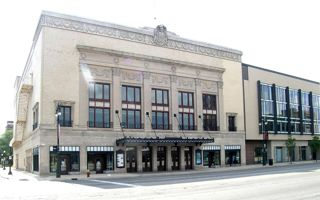

Concierto de clausura


La orquesta universitaria interpretará bandas sonoras de videojuegos el .
Actividades › Cultura
Cada tarde, al terminar las ponencias, el campus se llena de música, danza y exposiciones organizadas junto al Aula de Cultura de la universidad. Todas las actividades culturales son gratuitas para las personas inscritas.

La orquesta universitaria interpretará bandas sonoras de videojuegos el .

Tres compañías de estudiantes presentan coreografías inspiradas en la tecnología.
Un recorrido por los hitos que nos han traído hasta aquí: